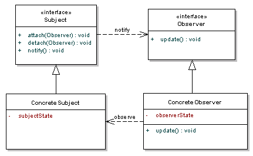

前言
观察者模式(Observer)
观察者模式又叫 发布订阅模式(Publish/Subscribe)
Define a one-to-many dependency between objects so that when one object changes state,all its denpends are notified and updated automatically
定义对象间的一种 一对多 的依赖关系，当一个主题对象的状态发送改变时，所有监听它的观察者对象都得到通知并自动更新。
类图如下： 
涉及到的角色：
-
Subject：抽象主题 角色- keep track of its obsevers（保存观察者的记录）
- provides an interface for attaching an detaching Observer objects（提供注册和注销观察者对象的接口）
-
Observer：抽象观察者 角色- defines an interface for update notification（定义接口，在得到subject的通知时更新自己）
-
ConcreteSubject：具体主题 角色- the object being observed（被观察的对象）
- stores state of interest to ConcreteObserver objects (存储concreteObserver感兴趣的状态)
- sends a notification to its observers when its state changes（当状态改变时给observer发送通知）
-
ConcreteObserver：具体观察者 角色- the observing object （观察对象）
- stores state that should stay consistent with the subject's（存储和subject一致的状态）
- implements the Observer update interface to keep its state consistent with the subject's（实现Observer接口的更新方法，使状态保持和subject保持一致）
时序图：

实现
使用java内置观察者模式(Observable/Observer)
源码示例：
import java.util.Observable;
import java.util.Observer;
public class ObserverPattern {
public static void main(String[] args) {
Screen screen = new Screen();
DataStore dataStore = new DataStore();
dataStore.addObserver(screen);
dataStore.setData("132");
}
}
class DataStore extends Observable{
private String data;
public String getData() {
return data;
}
public void setData(String data) {
this.data = data;
//mark the observable as changed
setChanged();
notifyObservers();
}
}
class Screen implements Observer{
@Override
public void update(Observable o, Object arg) {
DataStore ds = (DataStore) o;
System.out.println(ds.getData());
}
}
在上面这个例子中涉及到的各角色：
-
Subect（抽象主题角色）：java.util.Observable -
Observer（抽象观察者角色）：java.util.Observer -
ConcreteSubject（具体主题角色）：DataStore -
ConcreteObserver（具体观察者角色）：Screen
Java内置观察者的确定就是：Observable是一个类，而Java只允许单继承，如果要实现该模式的类有自己的父类，就无法使用了。
自己实现
源码如下：
import java.util.ArrayList;
import java.util.List;
public class ObserverPattern2 {
public static void main(String[] args) {
ObserverImp ob1 = new ObserverImp();
ObserverImp ob2 = new ObserverImp();
SubjectImp subject = new SubjectImp();
ob1.setSubject(subject);
ob2.setSubject(subject);
subject.attach(ob1);
subject.attach(ob2);
subject.setState("123");
subject.notifyObserver();//也可以把它放到setState方法里
System.out.println(ob1.getState());
System.out.println(ob2.getState());
}
}
interface Subject {
boolean attach(Observer o);
boolean dettach(Observer o);
void notifyObserver();
Object getUpdate();
}
class SubjectImp implements Subject {
private String state;
private boolean changed;
private List<Observer> list;
public SubjectImp() {
list = new ArrayList<>();
}
public void setState(String state) {
this.state = state;
changed = true;
}
@Override
public Object getUpdate() {
return state;
}
@Override
public boolean attach(Observer o) {
return list.add(o);
}
@Override
public boolean dettach(Observer o) {
return list.remove(o);
}
@Override
public void notifyObserver() {
if (changed) {
for (Observer observer : list) {
observer.update();
}
}
changed = false;
}
}
interface Observer {
void update();
void setSubject(Subject s);
}
class ObserverImp implements Observer {
private Subject s;
private String state;
@Override
public void update() {
this.state = (String) s.getUpdate();
}
public String getState() {
return state;
}
@Override
public void setSubject(Subject s) {
this.s = s;
}
}
日期：2014-05-04
参考资料：Design Patterns Uncovered: The Observer Pattern、http://www.dcs.bbk.ac.uk/~oded/OODP13/Sessions/Session6/Observer.pdf、Observer Design Pattern